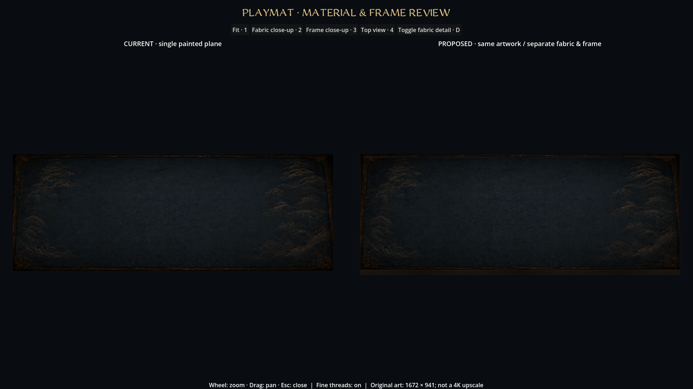
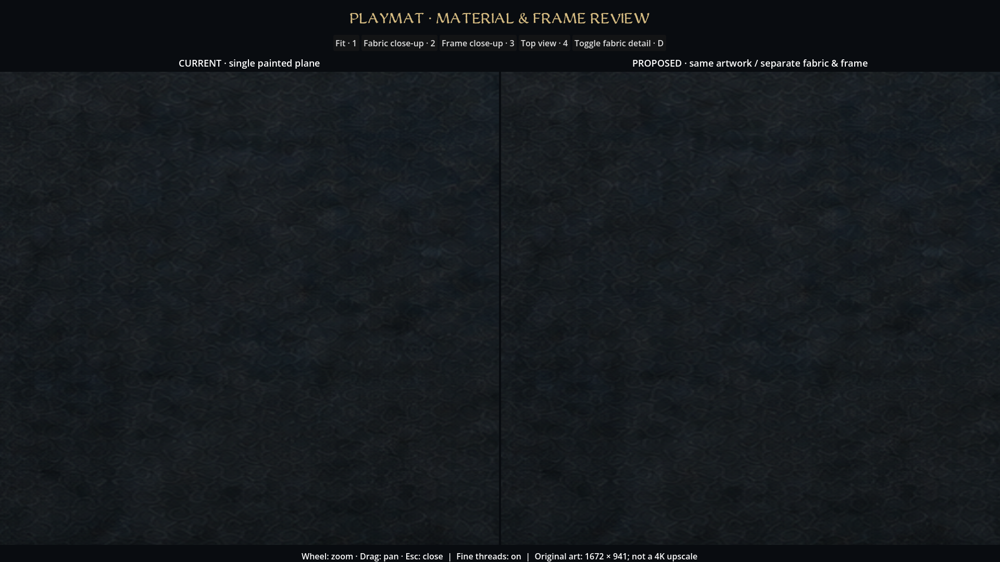
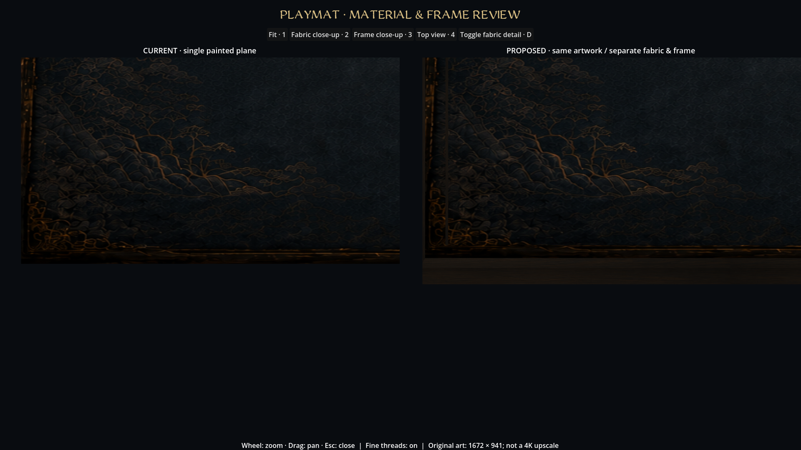
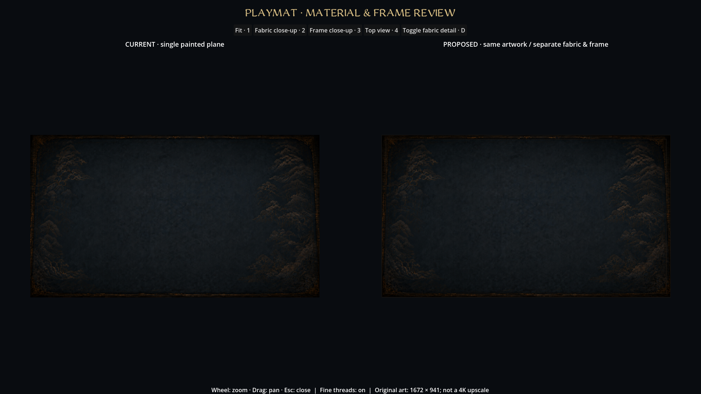
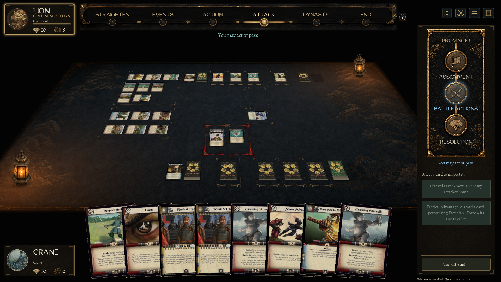
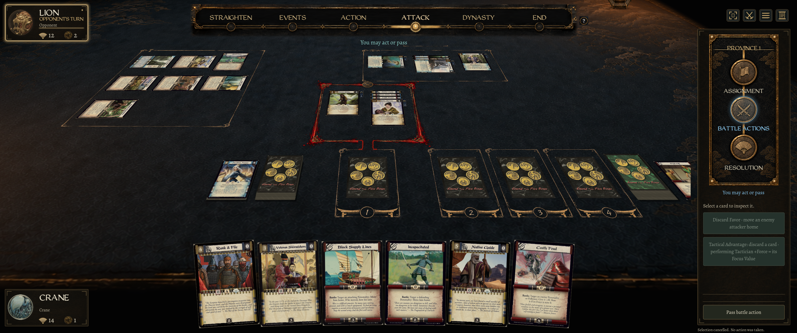

Playmat material & frame review
The live mat is one 1672 × 941 image, including the narrow wooden rim. These native Godot captures compare the original flat artwork with independent fabric/frame meshes using the same pixels. Fine threads add surface detail at close range; they do not restore missing detail in the printed gold artwork.
The generated reconstruction returned the same resolution and changed ornament details. It is retained as a reference, not used in these assets. This is a review prototype, not an approved 4K replacement.

Matching composition at fit view; left original flat plane, right separate assets.
Close fabric comparison. Separate fine yarn detail is subtle and filters away when zoomed out.
Same ornament UVs; the right-hand asset has a separate beveled rim and wood-grain underside.
Top-down source-to-asset comparison. No AI redraw is used in the proposed asset.
Real game with optional fine-detail shader. The physical 3D frame is still in the asset review, not yet substituted for the live projected plane.
Native 3440 × 1440 close battle framing with optional fabric detail. The actual current camera and card plane are retained.